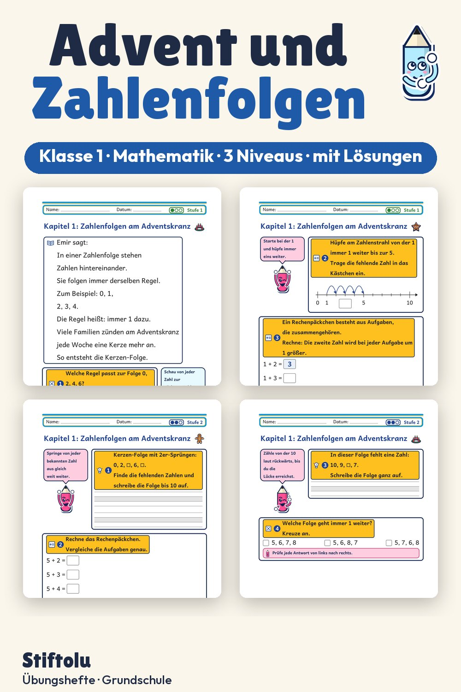
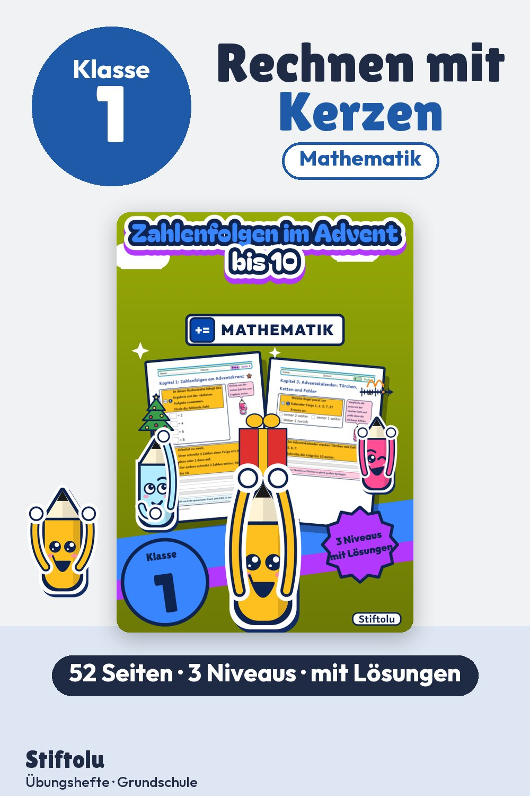

Werbung · Übungsheft von Stiftolu
Rechenpäckchen im Advent: Folgen fortsetzen und Fehler finden, Klasse 1


Im Advent rechnen Erstklässler mit Kerzen und Plätzchen: Rechenpäckchen, in denen die erste oder die zweite Zahl nach fester Regel wächst, stehen im Mittelpunkt, dazu die Fehlersuche in Folgen und Päckchen. Eigene Folgen zu erfinden gehört ebenfalls dazu. Für Wochenplan, Förderstunde oder Hausaufgabe stehen 52 Seiten mit drei Niveaus und Lösungen bereit, erhältlich auf eduki.